KnowNow
Closing the gap between alert and action

A multilingual, map-based emergency response app that helps people understand how a nearby threat affects them, find a safe destination, and take the next step quickly.
KnowNow began as a 14-week team project that ended as a low-fi prototype. I then independently redesigned it, reframing the problem and rebuilding the product strategy, information architecture, interactions, and prototype.
- Role
- Primary Research
Product Strategy
Information Architecture
Interaction Design
Prototyping - Duration
- 14 weeks + independent redesign
- Course
- Interaction Design 3
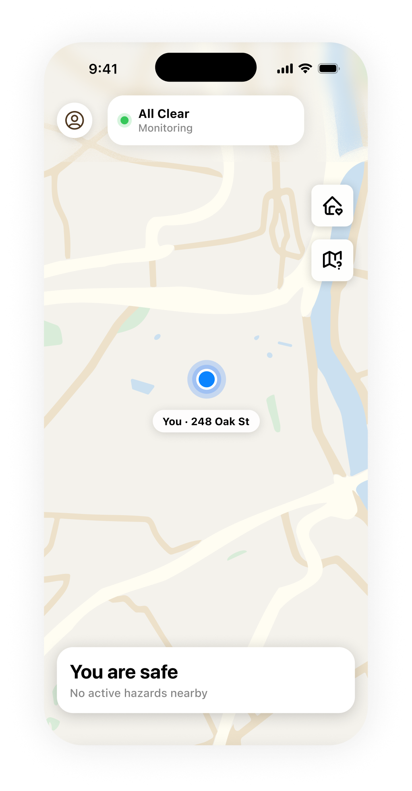
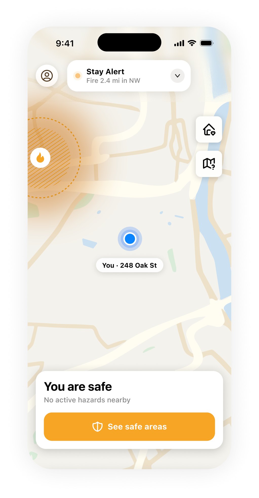
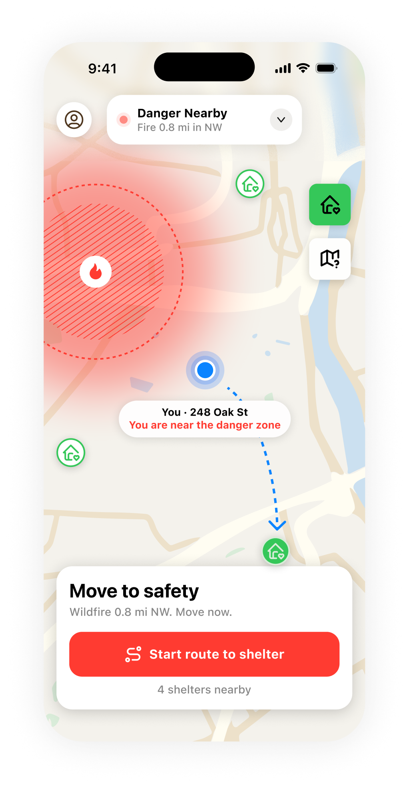
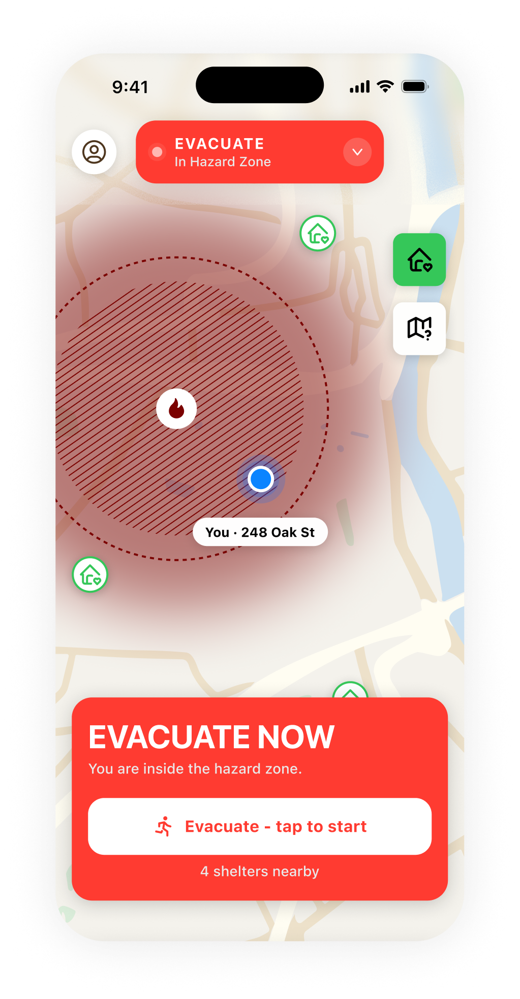
Context
The 2025 Los Angeles wildfires did not feel like a distant disaster. They affected the community around me, including classmates and faculty at ArtCenter. Beyond the visible destruction, I became interested in a less visible crisis: critical emergency information was not equally accessible across languages. Some non-English speakers could receive an alert yet still struggle to understand the danger, decide whether it affected them, or find help.
This led us to ask how emergency communication could become more accessible. But as the project developed, we discovered that translation was only one part of the gap between receiving an alert and knowing what to do next.
Research
We interviewed multilingual volunteers, an interpreter, emergency responders, and people affected by the fires, and visited a Red Cross shelter. Inside, support appeared to work well. But that view only included people who had already understood the emergency and reached help. Others relied on family or community members to interpret alerts, while some felt uncomfortable asking for translation. The people facing the greatest language barriers could disappear before the formal support system ever saw them.

Field visit — Red Cross emergency shelter, Los Angeles, January 2025
A system can appear effective while excluding the people who never make it through its first point of entry.
Reframing the Problem
By the end of the team project, we had expanded the challenge from helping non-English speakers seek support to creating universally accessible emergency communication. However, this framing was broader than the mobile experience we had designed. When I revisited the project independently, I narrowed the problem around a more immediate question: what does someone need to understand and do after receiving an alert?
From designing universal communication systems to guiding individual action during an emergency.
Structure
The team concept offered five parallel tools: news, training, alerts, shelters, and a packing list. In the redesign, I rebuilt the system around a smaller set of core objects, each answering one question a person asks during an emergency.
Each object exists to move people toward their next step. The system is no longer about what users can do, but about what they should do next.
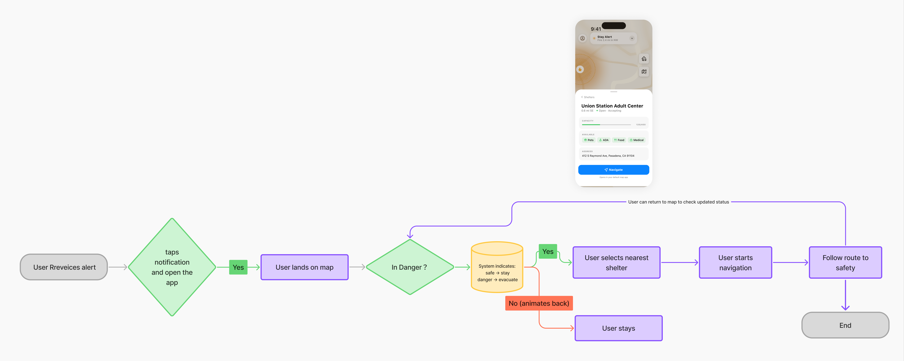
Refined user flow, from alert to a safe route
Iteration
A notification is often the first contact with the app, so I tested the landing screen in two rounds of walkthroughs with an AI-simulated persona. These were not sessions with real users, but they showed where the screen failed to explain itself.
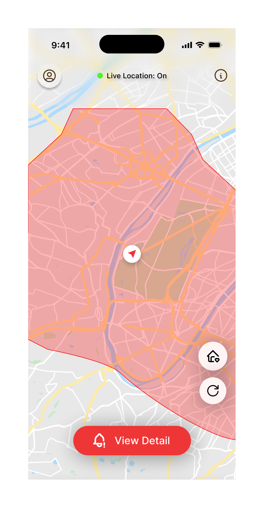
“I don’t know if I am in danger now. I don’t know if I should leave or stay.”
AI-simulated persona · Round 1 walkthrough
Say where the user stands
A status line such as “You are near the danger zone” or “You are inside the hazard zone” answers the first question before anything else.
Lead with one action
The bottom panel names the next step and offers a single primary button, instead of a generic “View details.”
Recommend one shelter
The nearest open shelter is highlighted rather than shown as one equal option among many.
Final Design
I redesigned KnowNow as a map-based experience that connects each alert to the user’s location, current emergency state, available destinations, and next action.
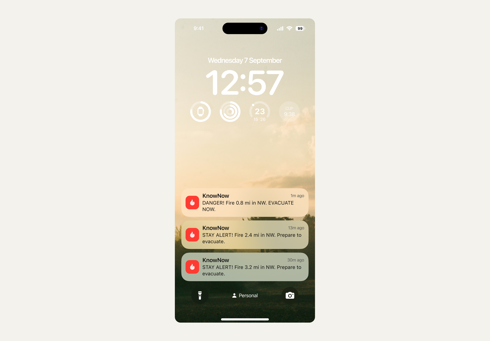
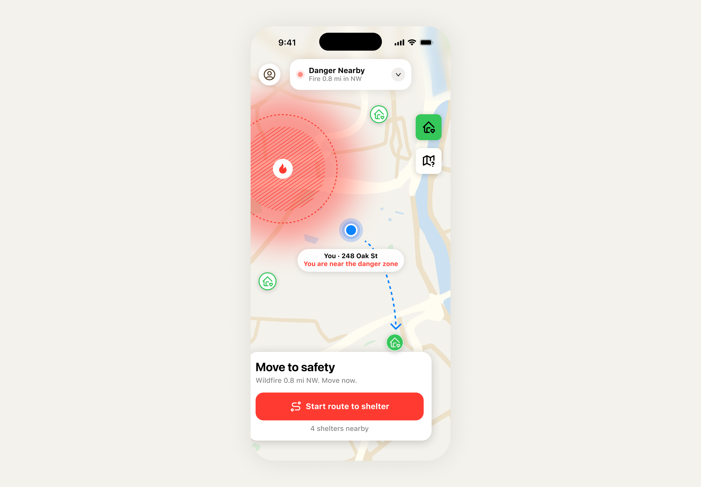
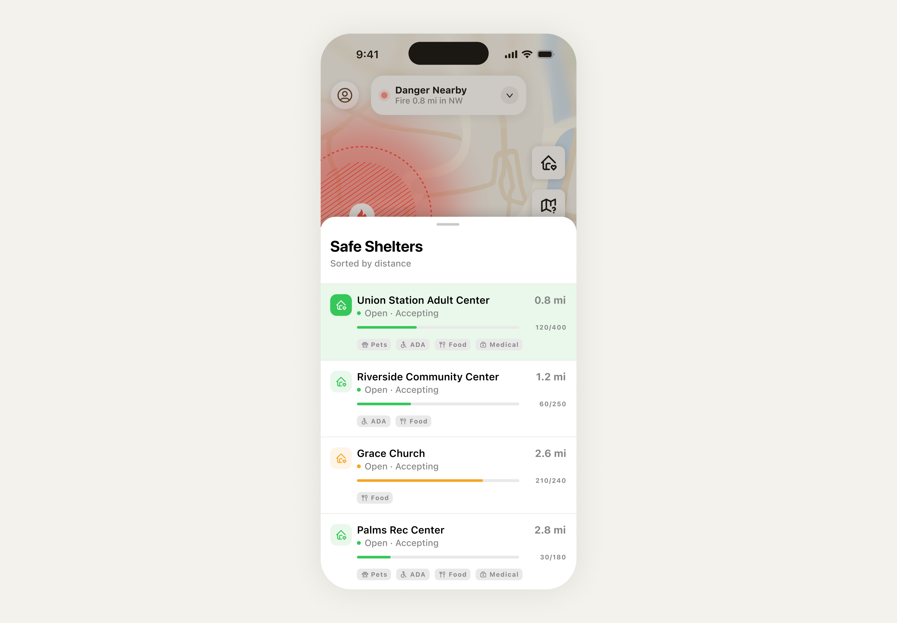
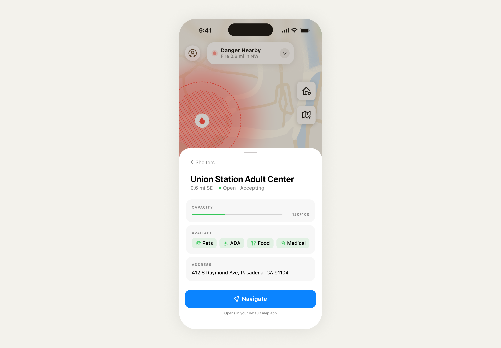
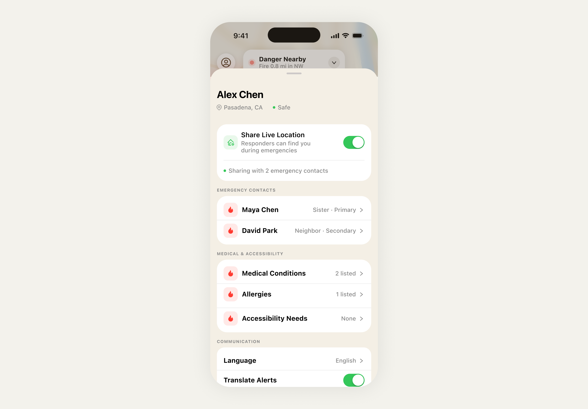
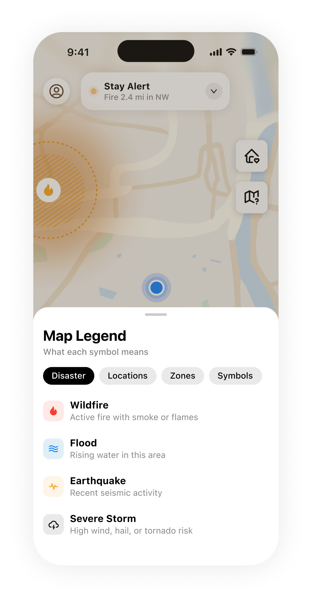
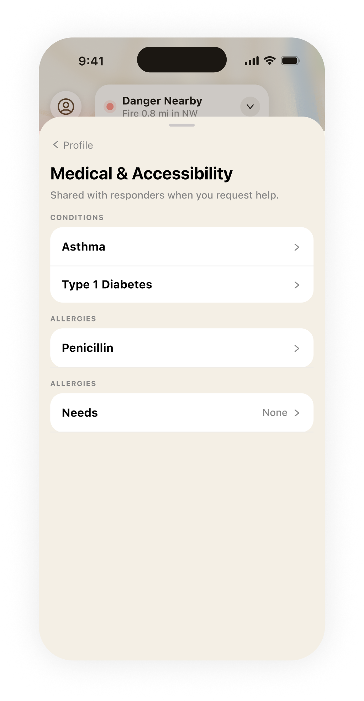
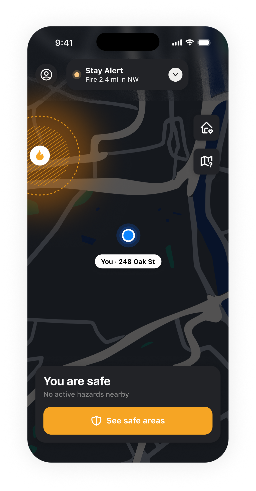
Reflection
The redesign transformed KnowNow from a collection of emergency tools into a connected path from alert to action. Because the landing screen was refined through AI-simulated walkthroughs rather than sessions with real users, the next step would be to validate its language, emergency states, and action guidance with multilingual residents and emergency-response professionals.